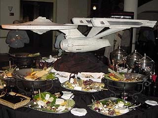
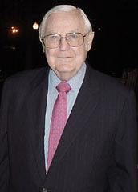
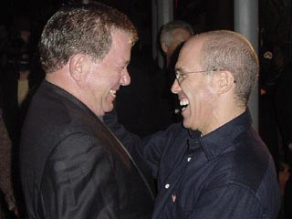
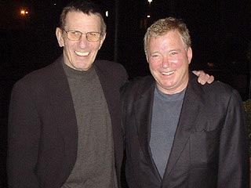

|

STAR TREK:
THE MOTION PICTURE
1979


Sinopse
comentada
Comentrios
Citaes
Os novos
efeitos
Trivia
Ficha
Tcnica
O
DVD
A Aventura Humana est
apenas
comeando...
"Jornada nas Estrelas: O
Filme" uma obra destinada a estabelecer marcos. Em 1979, a
produo original provou ao mundo que era possvel levar um seriado de
televiso s telonas e fazer sucesso. Mais de 20 anos depois, o filme
volta a fazer histria, como um divisor de guas no tratamento que o
franchise que ele praticamente inaugurou estava recebendo de sua
administradora, a Paramount, no mercado de DVDs.
No h muitas dvidas de que o lanamento do DVD com a Edio do
Diretor foi um marco. Robert Wise finalmente teve a chance de concluir
o filme que ele gostaria de ter feito em 1979, mas no teve tempo
suficiente para faz-lo --uma chance rarssima na histria do cinema, e
feita dentro dos mais rgidos parmetros de alterao de um filme,
sinalizando aos fs e crtica a vontade de no "rescrever histria".
tentadora a chance de refazer um filme. George Lucas fez isso com sua
edio especial da trilogia original de "Star Wars" e o
resultado foi uma verdadeira reviso histrica do filme, que incluiu
desde alteraes meramente cosmticas e desnecessrias a verdadeiras
adaptaes do filme para os atuais padres do que considerado
"politicamente correto". Quem perdeu na ocasio no foram nem
tanto os fs, mas a histria do cinema. Um filme geralmente reflete os
anseios e os medos da poca em que foi produzido. Lucas deturpou sua prpria
criao, ao desloc-la do ambiente histrico em que foi produzida.

Por isso de se louvar a postura da
Paramount de resistir tentao de transformar "Jornada nas
Estrelas: O Filme" em um travesti de sua verso original, pronta
para se tornar o blockbuster de 2002. Claro, essa adeso tem seu preo. 
A Edio do Diretor no trar de volta ao rebanho aqueles que
se desgarraram depois de ver o filme original, em 1979. Os que o
consideravam chato, longo e arrastado, continuaro tendo exatamente a
mesma opinio. Robert Wise e seus colegas responsveis pela nova edio
do filme poderiam at tentar mudar isso, mas no seria mais que o esforo
de Lucas com "Star Wars" --um desmembramento total do filme ao
ambiente em que foi produzido.
Claro, muitos pensariam: Wise poderia ter ao menos cortado aquelas sequncias
interminveis de efeitos especiais e atores olhando para uma tela azul.
Mas a verdade que, por pior que aquilo tenha ficado, a sequncia era
crucial para o roteiro e o andamento do filme. Que impacto a chegada de
V'Ger Terra teria para a audincia se Kirk e Spock levassem apenas dez
minutos para atravessar todo o complexo da sonda e chegassem logo a seu crebro
--e ao fim do mistrio--, descobrindo a Voyager-6?
O mximo que uma boa edio pode fazer a um filme ruim torn-lo
menos ruim. E a nova verso de Wise e cia. para "Jornada nas
Estrelas: O Filme" faz exatamente isso --mantm intacta a histria
e o contexto do filme, tornando-o melhor apenas na medida que seria possvel
se Wise tivesse dois meses a mais para editar o filme, em 1979.
Mais que isso, o DVD com a Edio do Diretor no renega seu
passado --inclui todas as cenas j vistas do filme, incluindo as tomadas
originais de efeitos especiais trocadas na nova verso, as cenas que
foram includas numa verso estendida para TV e as que estavam na verso
original do filme, mas foram excludas na nova edio. Sem dvida, um
bonito tributo aos que trabalharam para levar o filme aos cinemas na data
marcada, no com o que gostariam de ter em mos, mas com o que
efetivamente tinham.
Obviamente, nos documentrios, faltou aquele tom crtico e imparcial que
gostaramos de ver. Mas no se podia tambm esperar que a Paramount
fosse desenterrar toda a lama que envolveu a atribulada produo de Jornada
I, s para satisfazer a curiosidade mrbida de alguns fs. Mesmo
assim, h mais nos DVDs (j que o disco duplo) do que a maioria dos
trekkers capaz de decorar... o que no pouca coisa.
E a Paramount sabe quando deu uma dentro. Tanto que promoveu uma festa de
gala para o lanamento do DVD, que trouxe convidados ilustres, como o
executivo Jeffrey Katzenberg, que contribuiu muito para dar o pontap
inicial nos filmes de Jornada, antes de se mudar para a Disney e
ficar verdadeiramente famoso. Ele aparece aqui abraando William Shatner,
que dispensa apresentaes.

Alis,
alm do bom e velho capito, Leonard Nimoy tambm esteve l. E George
Takei tambm, mostrando que no guarda mgoas com a Paramount por ter
enterrado a sete palmos seu "sonho da srie prpria". Outros
"grandes" do franchise estavam por l, como Harve Bennett,
produtor dos filmes II ao V, Ron Moore, ex-roteirista de A Nova Gerao
e Deep Space Nine e Greg Jein, o criador dos modelos das naves para
as sries e filmes de Jornada.
A celebrao no era s pela restaurao do primeiro filme do
franchise; era muito mais pelo futuro brilhante que Jornada estava
ganhando, a partir daquele momento, no mercado de DVDs.
At ali Paramount havia lanado, nos EUA, todos os episdios da Srie
Clssica, em volumes de dois episdios, e os outros oito filmes do
franchise. Todos os discos vieram praticamente desprovidos de contedo
extra, enfurecendo muitos dos fs e desmerecendo a importncia de Jornada
no mercado de DVDs.
"Jornada nas Estrelas: O Filme", em DVD, promete mudar
essa imagem drasticamente. Seu lanamento mostrou que vale a pena
investir dinheiro na produo de um disco (aventa-se que a Edio
do Diretor tenha custado US$ 1 milho), e a Paramount prepara-se para
a redeno junto aos fs.
J est programado o lanamento da edio especial em DVD do segundo
filme da srie, "Jornada nas Estrelas II: A Ira de Khan".
H muito material a se adicionar, e algo que certamente estar presente
uma trilha de comentrios do filme feita por William Shatner e Leonard
Nimoy.

A dupla j acertou para gravar comentrios
para todos os outros filmes clssicos, o que certamente ser uma bela
adio ao j vultoso material de referncia que existe sobre esses
longa-metragens.
Alm disso, o estdio promete calibrar melhor seus lanamentos das sries
de TV. O primeiro ano da Nova Gerao chega s lojas americanas
em maro de 2002, em um box-set com sete discos, todos os episdios e
mais de duas horas de material extra, entre entrevistas, cenas cortadas e
bloopers.
Um futuro simplesmente imperdvel se abre para os trekkers no mercado de
DVD. E, mais uma vez, ser possvel dizer que tudo comeou com "Jornada
nas Estrelas: O Filme".